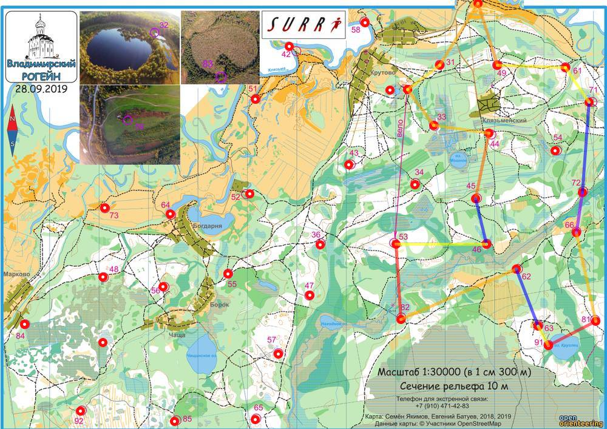

| Команда | Ахтуба - Бег Пиггес |
| Номер | 122 |
| Участники | Данилов Сергей, 1974 Зезекало Александр, 1975 Чиков Андрей, 1977 |
| Группа | м4 |
| Место | 4 |
| Очки | 95 |
| Штраф | 0 |
| Время | 03:57:28 |
| Результат | 95 |
| КП | Время | Сплит | Расстояние, км | Темп, мин/км | Отметка, сек |
|---|---|---|---|---|---|
| С | 12:00:00 | ||||
| 33 | 12:07:20 | 00:07:20 | 0.901 | 8.1 | 6 |
| 44 | 12:15:39 | 00:08:19 | 1.114 | 7.5 | 3 |
| 45 | 12:28:36 | 00:12:57 | 1.348 | 9.6 | 4 |
| 46 | 20:38:00 | 4592:09:24 | 0.946 | >999 | 0 |
| 53 | 13:06:26 | -4592:28:26 | 1.811 | <1 | 9 |
| 82 | 13:24:03 | 00:17:37 | 1.521 | 11.6 | 21 |
| 62 | 13:44:05 | 00:20:02 | 2.535 | 7.9 | 9 |
| 63 | 20:38:06 | 4590:54:01 | 1.229 | >999 | 0 |
| 91 | 14:04:59 | -4591:26:53 | 0.446 | <1 | 9 |
| 81 | 14:19:32 | 00:14:33 | 1.082 | 13.5 | 2 |
| 66 | 14:33:17 | 00:13:45 | 1.815 | 7.6 | 11 |
| 72 | 14:50:18 | 00:17:01 | 0.823 | 20.7 | 2 |
| 71 | 20:38:15 | 4589:47:57 | 1.819 | >999 | 0 |
| 61 | 15:20:02 | -4590:41:47 | 0.844 | <1 | 17 |
| 49 | 15:28:54 | 00:08:52 | 1.371 | 6.5 | 7 |
| 59 | 15:40:13 | 00:11:19 | 1.309 | 8.6 | 4 |
| 31 | 15:52:00 | 00:11:47 | 1.473 | 8.0 | 4 |
| Ф | 15:57:28 | 00:05:28 | 0.808 | 6.8 | |
| 03:57:28 | 20.093 км | 11.8 мин/км |
